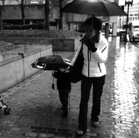

Our Founder
Vicky Wu Davis — Entrepreneur, Angel Investor & Catalyst for Innovative Education

Vicky Wu Davis
Founder, yCITIES
Vicky Wu Davis is an entrepreneur, angel investor, and catalyst for innovative education. She created yCITIES (Creating Impact Through Innovation, Entrepreneurship, and Sustainability) almost two decades ago to champion first-time founders of all ages in their earliest stages, and cultivates future funders to grow right alongside them.
Vicky has been a mentor at MIT's Venture Mentor Services for the past 20 years, which supports innovation and entrepreneurial activity throughout the MIT community. She recently also became a mentor for the Harvard Innovation Lab.
Vicky has been angel investing for over 15 years, primarily through Beacon Angels, TBD Angels, NuFund Ventures, and Adaptation Ventures.
Vicky sits on the Advisory Board of the Howe Innovation Center at Perkins School for the Blind (and is a Corporator there too), and on the Parent Advisory Board for Carroll Center for the Blind. She is also on the judging committee for National Braille Press' "A Touch of Genius Prize for Innovation," and often judges startup competitions.
Recognition & Leadership
Vicky has been a recognized voice in educational leadership, including keynoting the 2016 MA Annual STEM Summit and the 2016 Empower Schools Conference. Her entrepreneurial impact has been recognized by:
- Kauffman Foundation — "Entrepreneurs Giving Back"
- 2004 Boston Business Journal's "40 Under 40" Honoree
- Red Herring cover story — "Young Moguls: 20 Outstanding Entrepreneurs Under 35" (2005)
- 2015 WomenUp Honoree as a local woman of influence
- 2015 Bostinno's Fifty on Fire nominee
- 2016 Boston Women of Influence Honoree
- 2016 GK25 Boston's Most Influential People of Color Honoree
- 2016 Mass Technology Leadership Council's Distinguished Leadership Awardee
She is often quoted in founder how-to books, including Launching While Female: Smashing the System That Holds Women Entrepreneurs Back.
Beyond Work
Vicky is a mom of 3 kids (her youngest being legally blind) and 3 dogs. She loves everything about baseball, including coaching Little League for her boys in the past, and Beep Baseball (competitive baseball for the blind) for her daughter. Vicky is also an avid dancer and boxer.